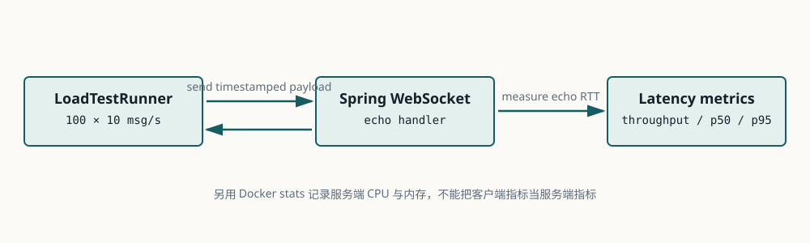

Lesson 0011 · G3
用数据观察 WebSocket 性能
本课的唯一目标：建立可重复的高频小消息基准，区分吞吐、延迟、错误率、客户端资源和服务端资源。
p95 < 200ms 是学习基线，不是生产 SLO。本课独立项目：examples/0011-high-frequency-benchmark。
1. 测量路径

客户端为每条消息写入唯一 ID 和发送时间，服务端原样回显，客户端根据 ID 计算往返延迟。这个设计能测到端到端 RTT，但不能直接等同于服务端处理时间。
| 指标 | 含义 | 来源 |
|---|---|---|
| sent/received | 发送和收到回显的数量。 | 负载客户端。 |
| throughput | 单位时间内收到的回显数量。 | 负载客户端。 |
| p50/p95 | RTT 分布的中位数和高分位延迟。 | 负载客户端。 |
| error rate | 连接、发送、回显匹配或协议错误比例。 | 负载客户端和服务端日志。 |
| CPU/memory | 服务端资源消耗和可能的瓶颈。 | Docker stats、JVM 指标。 |
2. 源码导读：负载如何生成
LoadTestRunner
├─ 创建 N 个 LoadClient
├─ 等待全部 WebSocket OPEN
├─ scheduleAtFixedRate(send, 100ms)
└─ 汇总 sent / received / errors / latencies
LoadClient
├─ payload(id, timestamp, padding)
├─ pending[id] = send time
└─ onText → pending.remove(id) → record RTT
EchoWebSocketHandler
└─ session.sendMessage(message)
LoadTestRunner 使用 JDK 自带的 java.net.http.WebSocket，减少压测工具抽象，方便读懂连接、发送和回调。LatencyStats 用 nearest-rank 方式计算百分位，测试中明确了计算规则。
服务端EchoWebSocketHandler对同一 session 的发送加锁，避免并发写入交错；这只是正确性保护，不代表已经解决慢客户端和背压。
3. 运行三次基线
cd examples/0011-high-frequency-benchmark mvn test mvn spring-boot:run
另开终端执行：
mvn -q exec:java \ -Dexec.mainClass=com.example.websocket.LoadTestRunner \ -Dexec.args="100 10 60 ws://localhost:8080/ws/load"
严格重复三次，记录 Java 版本、机器、JVM 参数、预热状态、服务端日志和每次结果。服务端 CPU/内存需要单独记录；若放入容器，使用 docker stats --no-stream <container>。
4. 如何解释结果
- p50 稳定但 p95 抖高，通常说明尾部请求受调度、GC、锁竞争或慢客户端影响。
- sent 高、received 低，先查连接错误、发送失败、服务端关闭和回显匹配，不要直接称为吞吐下降。
- 吞吐接近目标但 CPU 过高，说明系统可能只是“完成了”，不代表有足够容量余量。
- 三次结果差异很大，先改善实验稳定性，再讨论优化；不要从单次结果推断瓶颈。
5. 失败案例
| 现象 | 优先检查 |
|---|---|
| 连接无法在 30 秒内全部打开 | 端口、服务启动、文件描述符、线程和握手错误。 |
| 发送数量明显不足 | 调度器、连接状态、客户端 CPU 和 sendText 异常。 |
| p95 远高于 p50 | GC、线程池、锁、网络抖动、慢客户端和消息堆积。 |
| 服务端内存持续上涨 | 未清理 session、未完成发送、无界队列或测试结束后连接未关闭。 |
6. 练习：先回忆，再验证
完成至少一次基准后回答下面 4 个问题：
- 为什么本课同时记录 p50 和 p95？
查看答案
p50 描述典型请求，p95 暴露尾部延迟。只看平均值或 p50 可能掩盖少量但严重的排队、GC 或慢客户端问题。
- 为什么客户端 RTT 不能直接当作服务端处理时间？
查看答案
RTT 包含客户端调度、网络传输、代理、服务端排队和处理、回传以及客户端回调时间，不能隔离其中单一阶段。
- 为什么要重复三次而不是只跑一次？
查看答案
单次结果可能受 JVM 预热、GC、机器背景负载和网络抖动影响。重复运行可以观察方差并避免过度解读偶然结果。
- 为什么“没有错误”不等于性能合格？
查看答案
系统可能在高 CPU、严重尾延迟或低容量余量下完成全部消息。性能验收必须同时看吞吐、延迟、错误率和资源。
快速检查：p95 主要帮助发现什么？